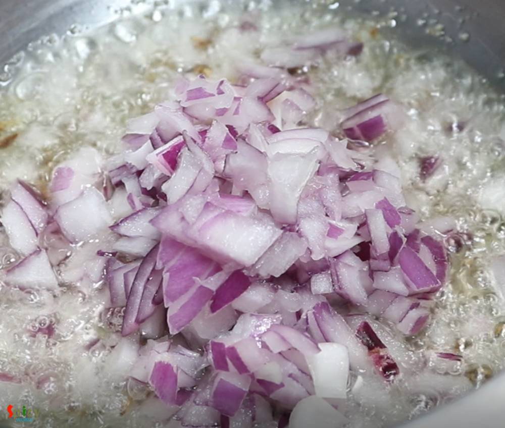
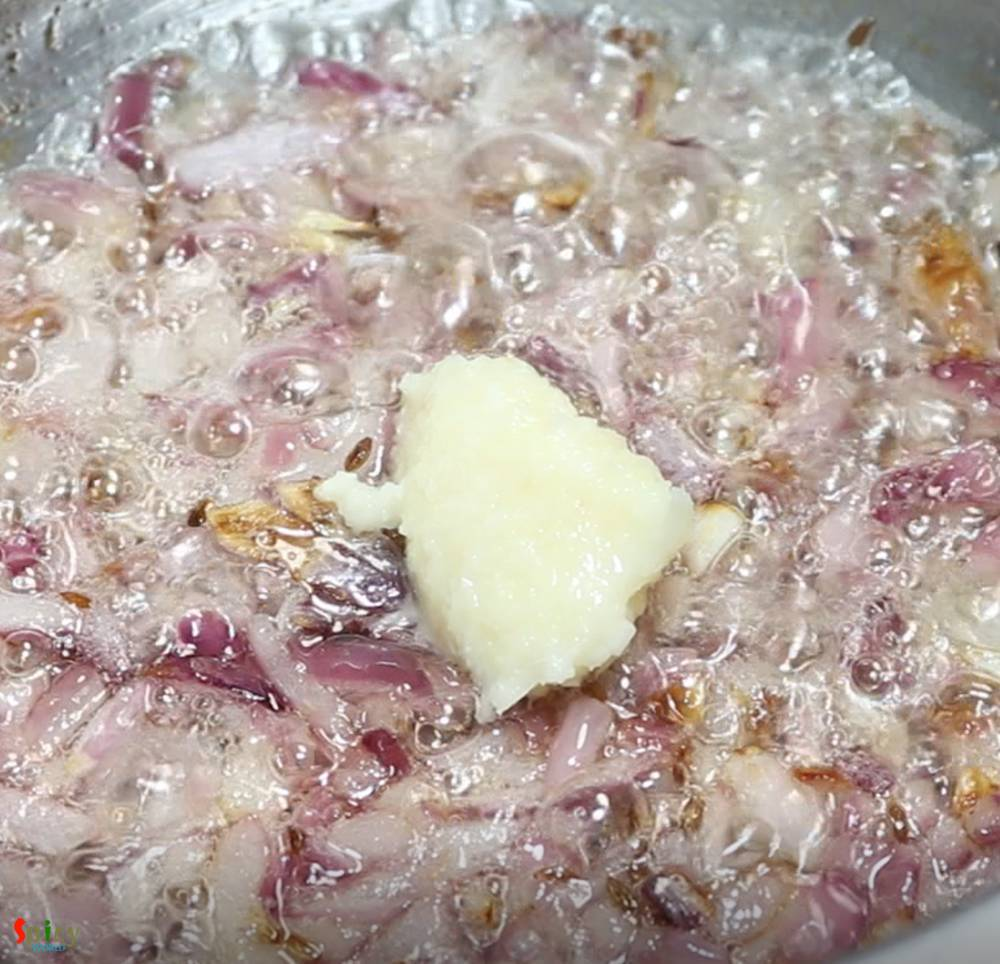

Simple and Easy Recipes
Lehsuni Daal Tadka / Garlic flavored spicy Lentils
© 2016 Spicy World, Published on: Jan 14, 2019
Lehsuni Daal Tadka is a spicy toor lentil preparation which has a very flavorful garlicky tempering. This daal tadka goes best with plain chapati or rice. The recipe is very simple and easy. I usually make this lehsuni daal during winter as it tastes so good and seems comfort in a bowl in those chilly afternoons or nights. Try this in your kitchen and let me know how it turned out for you.

Ingredients
- 1 and half cup of toor (arhar) daal.
- 1 small onion, chopped.
- 1 Tablespoon of ginger garlic paste.
- 1 big tomato, chopped.
- 2 Tablespoons of finely chopped garlic.
- 1 Teaspoon of cumin seeds.
- Half Teaspoon of hing or asafoetida.
- Spice powder (1 Teaspoon of turmeric powder, 1.5 Tablespoon of red chili powder, 1 Teaspoon each of roasted cumin and coriander powder).
- Salt as per your taste.
- 1 dry red chili.
- 4 Tablespoons of cooking oil.
- 2 Tablespoons of ghee.
- Some chopped coriander leaves.
- Water.


Steps
Wash the daal with water very well. You can also mix masur daal if you want, then take 1 cup of toor daal and half cup of masur daal.
In a pressure cooker add the washed daal, 1.5 cups of water, some salt and half Teaspoon of turmeric powder. Mix well.
Cook the daal for 3-4 whistles and let the steam settle down on its own.
Then open the lid and mix the daal with a spoon, keep it aside.
Heat cooking oil in a pan.
Add cumin seeds and hing. Saute for few seconds.
Add chopped onion, cook for 3-4 minutes.
Then add ginger garlic paste. Cook for 2 minutes on medium flame.
Add the chopped tomatoes, cook for 4-5 minutes.

Then add all of the spice powder, mix well for 2 minutes on low flame.
Now add the cooked daal, mix well for 2-3 minutes on medium flame.
Add 1/4th cup of hot water, some more salt if you need, mix well and cook for 6-8 minutes.

Keep the daal in simmer and heat another small pan.
Add the ghee in that pan and let it melt.
Then add chopped garlic and dry red chili, fry for 1-2 minutes.
Before turning off the heat, add half Teaspoon of red chili powder (you can add kashmiri chili powder), mix well.
Immediately pour the tempering all over the cooked daal and mix well.
Turn off the heat and add chopped coriander leaves. Mix well.
Your lehsuni daal tadka is ready to serve.
Serve this hot with chapati, naan or rice.
")